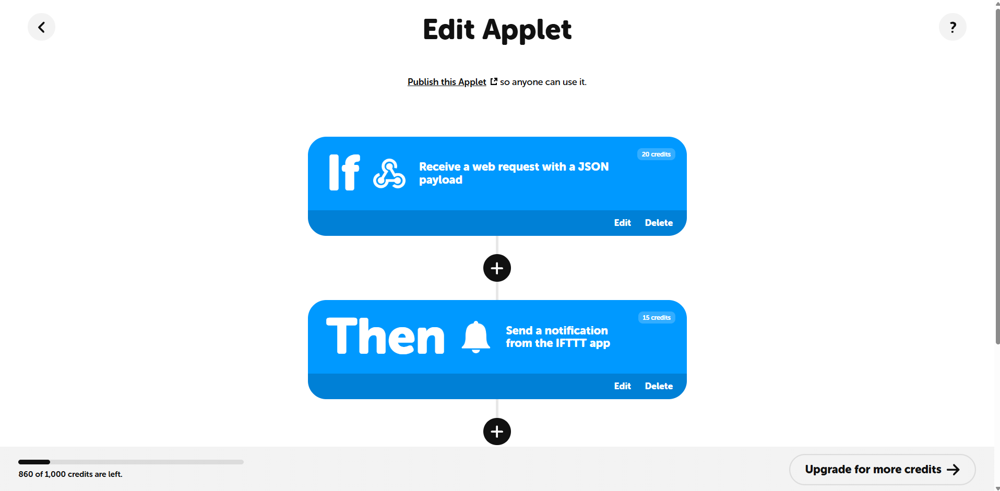
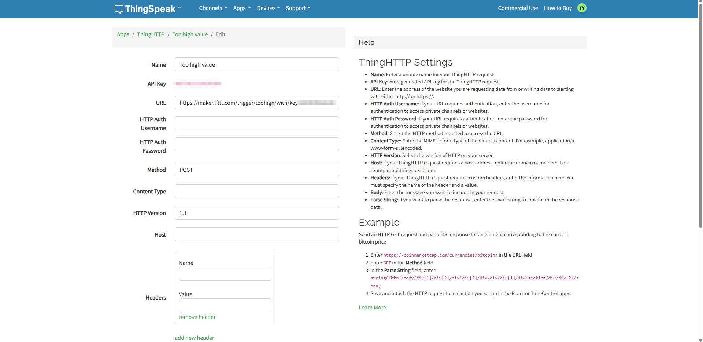
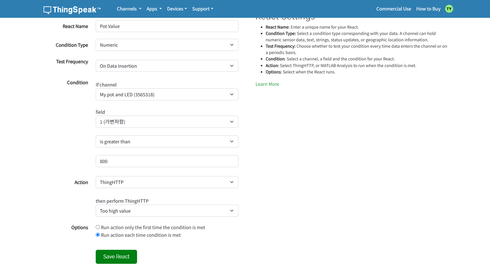
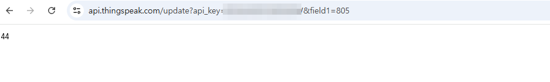
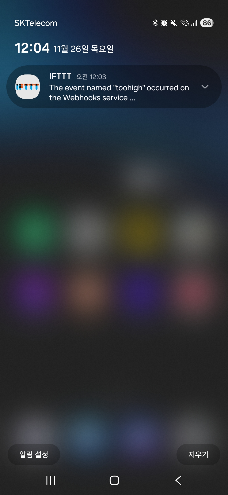

어떻게 연결되나요?
채널에 값이 들어오면 ThingSpeak가 스스로 조건을 검사하고, 조건을 만족할 때만 IFTTT로 신호를 보냅니다. 아두이노나 PC 프로그램이 따로 알림을 보내지 않아도, 클라우드끼리 웹 주소(URL)를 호출하는 것만으로 휴대폰 알림까지 이어집니다.
| 구성 요소 | 설정 |
|---|---|
| ThingSpeak 채널 | My pot and LED (field1: 가변저항) |
| React 조건 | field1 is greater than 800 |
| ThingHTTP 이름 | Too high value |
| IFTTT 이벤트 이름 | toohigh |
IFTTT Applet 만들기
IFTTT는 "이것이 일어나면 저것을 한다"는 규칙(Applet)을 만드는 서비스입니다. 여기서는 "toohigh라는 웹 요청을 받으면 → 휴대폰에 알림을 보낸다"로 설정했습니다.
If This — 조건
Webhooks → Receive a web request with a JSON payload
Event Name: toohigh
Then That — 실행
Notifications → Send a notification from the IFTTT app
Message: 기본 문구The event named "{{EventName}}" occurred on the Webhooks service

Webhook 주소
내 Webhook 키는 ifttt.com/maker_webhooks → Documentation에서 확인합니다. 이 주소를 호출하면 Applet이 실행됩니다.
https://maker.ifttt.com/trigger/toohigh/with/key/{웹훅키}브라우저 주소창에 이 주소를 직접 넣었을 때 Congratulations! You've fired the toohigh event가 뜨고 휴대폰 알림이 오면 IFTTT 쪽 설정은 끝난 것입니다.
ThingHTTP — Webhook 연결
ThingHTTP는 ThingSpeak가 대신 호출해 줄 웹 요청을 미리 저장해 두는 기능입니다. 위의 IFTTT Webhook 주소를 등록해 두면, 나중에 React가 이 요청을 실행합니다.
| 항목 | 값 |
|---|---|
| Name | Too high value |
| URL | https://maker.ifttt.com/trigger/toohigh/with/key/{웹훅키} |
| Method | POST |
| Content Type | (비움) |
| HTTP Version | 1.1 |
ThingHTTP는 목록에 있는 자체 API Key로 api.thingspeak.com/apps/thinghttp/send_request?api_key={ThingHTTP키}를 호출하면 React 없이 단독으로 실행해 볼 수 있습니다.

React — 호출 조건 등록
React는 채널에 새 값이 들어올 때마다 조건을 검사하고, 조건을 만족하면 정해진 동작(ThingHTTP)을 실행합니다.
| 항목 | 값 |
|---|---|
| Condition Type | Numeric |
| Test Frequency | On Data Insertion (값이 들어올 때마다) |
| Condition | My pot and LED · field 1 (가변저항) · is greater than · 800 |
| Action | ThingHTTP → Too high value |
| Options | Run action each time condition is met |

API Request — 채널에 값 기록
채널의 API Keys 탭에 있는 Write API Key로 아래 주소를 호출하면 field1에 값이 기록됩니다. 조건(800 초과)을 만족하도록 805를 보냈고, 44번째 기록으로 저장되었습니다.
https://api.thingspeak.com/update?api_key={Write_API_Key}&field1=805기록 성공. 숫자는 몇 번째 기록인지(entry 번호)를 뜻합니다.
기록 실패. 키가 틀렸거나 15초 기록 제한에 걸린 경우입니다.
기록은 되지만 React 조건을 만족하지 않아 알림이 오지 않습니다.

휴대폰 알림 확인
값을 기록하고 몇 초 뒤 휴대폰 알림창에 IFTTT 알림이 도착했습니다. 알림에는 이벤트 이름 toohigh가 들어간 메시지가 표시됩니다.

어려웠던 점과 고민
메시지에 값을 넣으려다 생긴 오류
- 문제
- 알림 메시지에
{{Value1}}을 넣자Unrecognized ingredient오류가 났습니다. - 원인
- Applet 트리거가 Receive a web request with a JSON payload라서
Value1재료(ingredient)가 없었습니다. 재료는 트리거 종류마다 다릅니다. - 해결
Value1을 빼고, 이벤트 이름이 들어가는 기본 메시지를 그대로 사용했습니다.
값을 기록해도 React가 반응하지 않음
- 문제
- 값 기록은 성공했는데 알림이 오지 않았습니다.
- 원인
- React 조건이
> 800인데 그보다 작은 값을 보냈고, Options가only the first time이라 이미 한 번 실행된 뒤로는 다시 실행되지 않았습니다. - 해결
- 900을 보내고, React를
each time으로 새로 만들었습니다.
API Request 결과가 0
- 문제
- 주소를 호출하면 브라우저에 0만 나왔습니다.
- 원인
- 무료 계정은 약 15초에 한 번만 기록할 수 있어서, 너무 빨리 다시 보내면 거절됩니다.
- 해결
- 15초 이상 기다린 뒤 보내자 entry 번호가 나왔습니다.
느낀 점
단계가 여러 개라 알림이 안 올 때 어디가 문제인지 알기 어려웠습니다. 그래서 IFTTT 주소 직접 호출 → ThingHTTP만 단독 실행 → 채널에 값 기록 순서로 한 구간씩 따로 테스트했고, 덕분에 문제가 React에 있다는 것을 찾을 수 있었습니다.
또 서로 다른 회사의 서비스가 URL 하나로 연결된다는 점이 인상적이었습니다. 한쪽은 주소를 부르고 다른 쪽은 그 주소를 기다리기만 하면 되기 때문에, 이벤트 이름이나 조건 값, 옵션 하나만 달라도 연결이 끊어진다는 것을 배웠습니다.